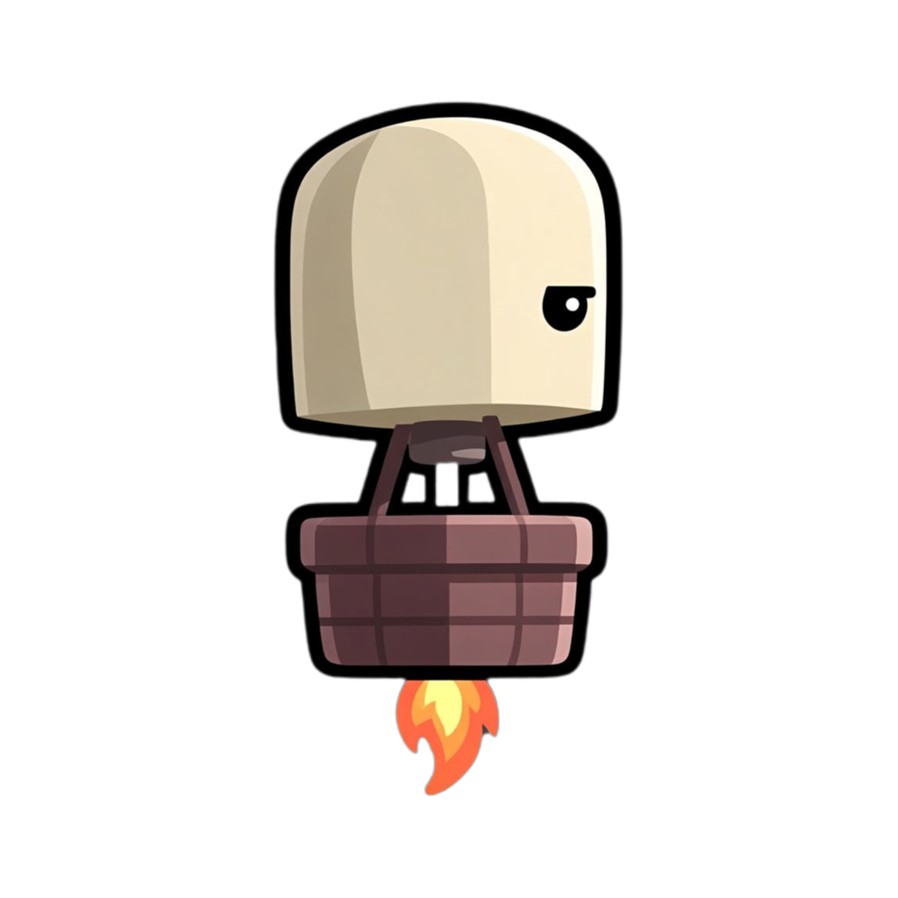

بالن غروب
تنظیمات
◖موسیقی
◔صدای بازی
▣ویبره
◷
سرعت بازیبا بالا رفتن امتیاز، سرعت کمکم بیشتر میشود
★بازنشانی امتیاز›
راهنما
هر ستون را مستقیم لمس کن.
هر بار لمس کردن، شکاف همان ستون را کمی به بالا میبرد؛ حرکت خودکار وجود ندارد.
با کشیدن انگشت روی ستون نیز فقط همان ستون جابهجا میشود.
بازی تمام شد
امتیاز
0